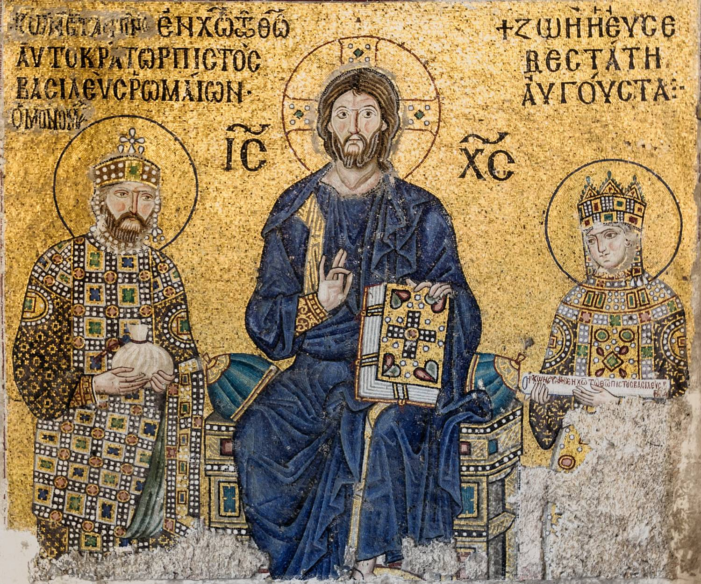

Le tissage et le sacré : la fonction ésotérique du fil à travers les traditions
Par Anibal Edelberto Amiot — Publié le 8 octobre 2026 · Article de synthèse, version 4 · Sources consultées les 7 et 8 octobre 2026
Du destin à l’ordre cosmique, du corps à la transmission : une lecture comparée des arts textiles.
Sommaire
Pourquoi le tissage devient-il un symbole spirituel ?
Un fil paraît fragile. Entrelacé avec d’autres, il devient une surface capable de couvrir un corps, de porter une image et de traverser les générations. Le tissage rend ainsi sensible une question qui habite de nombreuses pensées religieuses : comment des éléments séparés peuvent-ils former un monde qui tient ensemble ?
Les exemples réunis ici permettent de distinguer quatre fonctions : représenter l’ordre du monde, donner une forme au destin, accompagner ou protéger le corps, et transmettre une connaissance par le geste. Cette classification est une proposition de lecture ; chaque tradition conserve ses propres mots, récits et usages.
Le terme « ésotérique » demande lui-même une précision. Une connaissance initiatique, une métaphore philosophique, un culte public et un vêtement rituel ne relèvent pas du même registre. Nous emploierons ce mot pour les lectures qui cherchent, sous l’objet ou le geste textile, un sens concernant l’existence, la transformation ou la relation au divin, en précisant lorsque les sources décrivent une initiation véritable.
Ce parcours traverse la Méditerranée ancienne, l’Inde, l’Asie orientale, des traditions africaines, les Amériques et le Pacifique. Il constitue un panorama documenté, non un inventaire de toutes les traditions ni la preuve d’une doctrine originelle commune.
1. Le métier : une expérience concrète de la relation
Sur un métier, la chaîne désigne les fils disposés et maintenus sous tension ; la trame les entrecroise pour constituer l’étoffe. Le motif dépend de cet entrelacement, mais aussi des matériaux, des couleurs et des décisions prises à chaque passage. Une règle et une succession d’actes produisent ensemble une forme.
On comprend pourquoi cette opération peut servir à penser le rapport entre permanence et changement, unité et diversité, structure et événement. Cette interprétation part du geste observé ; elle ne doit pas devenir un dictionnaire automatique où la chaîne aurait partout le même sens et la trame toujours son contraire.
Il faut également distinguer les techniques. Filer produit un fil ; tisser entrelace chaîne et trame ; broder ajoute un travail sur une étoffe ; nouer, tresser et fabriquer un filet suivent d’autres opérations. Leurs symbolismes peuvent dialoguer, sans que leurs histoires se confondent.
2. Égypte et Mésopotamie : les arts textiles dans le domaine divin
En Égypte, Neith associe plusieurs domaines que notre regard sépare souvent : création, protection et fabrication textile. Le Museu Egipci de Barcelone la présente comme une divinité créatrice et l’inventrice du tissage ; dans son rôle funéraire, elle fournit au défunt les bandelettes et le linceul de la momie. [1]
L’étoffe intervient ainsi au passage entre vie et mort. Elle enveloppe le corps dans un dispositif religieux de protection. On peut lire ce geste comme une manière de préserver une continuité au moment de la rupture, mais il s’agit ici d’une interprétation du rôle décrit, non d’une formule universelle de l’ancienne religion égyptienne.
La documentation mésopotamienne connaît également Uttu, identifiée comme déesse du tissage dans les corpus lexicaux accessibles par ORACC. Ce témoignage atteste une inscription du métier dans le monde divin ; il ne suffit pas, à lui seul, à reconstruire une cosmologie où l’univers entier serait un tissu. [2]
3. Grèce : offrir, raconter et agir sur le temps
À Athènes, le péplos offert à Athéna inscrit le textile dans la vie religieuse et civique. Les notices du musée de l’Acropole décrivent sa présentation dans le cadre des Panathénées. Fabriquer et offrir l’étoffe participe à la relation collective avec la déesse : le travail humain devient une offrande publique. [3]
Les récits littéraires montrent d’autres pouvoirs. Dans l’Odyssée, Pénélope tisse le linceul de Laërte le jour et défait son ouvrage la nuit pour retarder le mariage exigé par les prétendants. Le tissage devient une maîtrise du délai : avancer et défaire permettent de garder une décision ouverte. Il ne s’agit pas d’un rite initiatique décrit par Homère, mais d’une action dont la portée symbolique est considérable. [4]
Chez Ovide, la confrontation entre Arachné et Minerve porte aussi sur ce que le tissu donne à voir. Minerve représente l’autorité des dieux ; Arachné expose leurs tromperies et leurs violences. L’étoffe devient un récit qui peut soutenir un ordre ou le contester. La transformation d’Arachné en araignée ne se réduit donc pas à une leçon sur l’orgueil : l’épisode permet aussi une lecture du conflit entre puissance, vérité représentée et liberté de l’artiste. [5]
4. Filer le destin : Platon et le Nord européen
Le fil du destin n’est pas nécessairement un tissu. Dans le mythe d’Er, à la fin de la République, Platon décrit le fuseau de la Nécessité, les mouvements cosmiques et les trois Moires. Les vies choisies par les âmes s’inscrivent dans cet ordre. Le filage relie ici destin individuel et organisation du monde ; il ne faut pas attribuer au passage un métier à tisser qu’il ne décrit pas. [6]
Une scène véritablement textile apparaît dans le Darraðarljóð, chant transmis dans la saga de Njáll. Des femmes identifiées comme des valkyries travaillent sur un métier effroyable : des entrailles constituent les fils, des têtes servent de poids et des armes deviennent des outils. Le chant met en relation leur ouvrage et le sort de la bataille. [7]
Ce tissu rappelle que l’image du lien peut être redoutable. L’existence mise en relation peut aussi être saisie dans un ordre qui condamne ou détruit. Ce témoignage précis est plus solide qu’une affirmation générale selon laquelle tous les êtres du destin nordique seraient des tisseuses.
5. Porphyre : le corps comme vêtement de l’âme
Dans L’Antre des nymphes, Porphyre interprète le passage de l’Odyssée où des nymphes tissent des étoffes pourpres sur des métiers de pierre. Il lit les instruments de pierre comme une image des os et le tissu pourpre comme celle de la chair formée à partir du sang. Le corps devient le vêtement dont l’âme se revêt dans sa descente vers l’existence corporelle. [8]
Nous sommes ici devant une lecture allégorique explicitement spirituelle. Le métier ne sert plus seulement à produire une couverture : il figure la constitution d’un être incarné. La surface visible renvoie à un processus que l’interprète estime caché dans le récit.
Cette distinction est essentielle : Porphyre expose une interprétation néoplatonicienne d’Homère. C’est un témoignage sur cette interprétation, non une preuve que chaque auditeur des poèmes homériques connaissait ou partageait ce sens.
6. Les Upanishad : en quoi le monde est-il tissé ?
Dans la Brihadaranyaka Upanishad, Gārgī interroge Yājñavalkya sur ce qui soutient le monde. L’échange emploie une image que certaines traductions rendent par chaîne et trame : en quoi sont tissés le ciel, la terre et ce qui fut, est et sera ? L’espace, ou ākāśa, apparaît dans la réponse ; l’interrogation se poursuit vers l’Impérissable, akṣara. [9]
La fonction du symbole est ici métaphysique. Il conduit de la diversité des phénomènes à la question de leur fondement. Le lecteur ne reçoit pas une explication technique de l’univers, mais une manière de déplacer son attention : au lieu de regarder seulement les choses, chercher ce qui rend leur existence possible.
Le rapprochement est puissant parce que le textile demande lui aussi un support et des relations. Il reste une analogie : une étoffe observable et le fondement dont parle le texte ne sont pas deux objets de même nature.
7. Kabir : le tissu du corps et la vigilance intérieure
La poésie associée à Kabir déplace l’image vers la vie intérieure. Dans une version chantée de Chadariya jheeni, présentée par la Kabir Society of America, le corps est figuré par un tissu délicat, formé avec les éléments et élaboré pendant les mois de la gestation. L’image du tissu souillé invite à interroger la manière de vivre et celle de recevoir ce corps prêté pour un temps. [10]
La tradition poétique liée à Kabir est plurielle : ses chants circulent dans des versions et des communautés différentes. Il convient donc de nommer la version consultée plutôt que de présenter une traduction comme un texte unique et définitif.
Dans cet usage, le geste artisanal devient un langage de l’attention. Entretenir l’étoffe peut se lire comme apprendre à ne pas abîmer l’existence confiée. Cette lecture éthique prolonge la métaphore sans transformer toute activité de tissage en pratique mystique.
8. Le bouddhisme Huayan : le filet et l’interdépendance
Le bouddhisme Huayan emploie le filet d’Indra pour rendre sensible l’interdépendance. À chaque intersection, un joyau reflète les autres. La Stanford Encyclopedia of Philosophy présente cette image comme une manière de penser la dépendance réciproque des choses quant à leur existence et à leur identité. [11]
Le rapprochement avec le tissage porte sur le réseau : un élément ne se comprend pas isolément des relations qui le constituent. Mais un filet de joyaux est une image doctrinale, pas la description d’un rite accompli sur un métier textile.
Cette comparaison offre une conséquence pour notre lecture : tenir ensemble ne signifie pas obligatoirement être gouverné par un tisseur divin. Les conceptions du fondement des Upanishad et de l’interdépendance Huayan doivent rester distinctes, même lorsque leurs images se répondent.
9. Chine et Japon : les travaux du ciel
Dans les récits chinois, Zhinü est la Tisserande céleste, séparée du Bouvier par la rivière du ciel et autorisée à le rejoindre lors de Qixi. Des traditions de cette fête relient aussi l’habileté textile à des gestes de demande de savoir-faire, notamment le passage du fil dans une aiguille. Le Chinese Text Project donne accès à ces récits et aux références littéraires qui les accompagnent. [12]
Ces exemples mettent en relation travail, calendrier et ordre céleste. Ils ne prouvent pas une origine textile du Yi King. Faire dialoguer les hexagrammes avec une grille de tissage peut constituer une recherche contemporaine féconde ; sa validité doit être examinée selon ses propres règles, séparément de l’histoire des textes chinois.
Au Japon, le Kojiki place Amaterasu dans une salle où sont confectionnés les vêtements des divinités. Susanoo profane cet espace en y faisant tomber un cheval écorché ; l’épisode précède le retrait de la déesse et la crise de lumière. [13]
Le récit permet de lire l’atelier divin comme un lieu dont la destruction engage un désordre plus vaste. Cette lecture suit la scène du Kojiki ; elle ne résume pas à elle seule le shinto ou l’ensemble des traditions textiles japonaises.
10. Le Yi King : la chaîne des changements
Le titre Yi King, aujourd’hui transcrit Yì Jīng, signifie usuellement « Classique des changements » ou « Classique des mutations ». Yì renvoie au changement. Jīng désigne un texte reconnu comme canonique ; il possède aussi un sens textile précis : la chaîne, les fils longitudinaux du tissu. La trame se dit wěi. Le dictionnaire du ministère de l’Éducation de Taïwan distingue ces acceptions et cite, pour jīng, la définition textile du Shuowen jiezi. [26] [27] [28]
Le rapprochement « changement et trame » touche donc une intuition juste, celle d’un vocabulaire reliant texte et textile, mais inverse les deux directions du métier. Pour conserver cette intuition avec précision, on pourrait proposer « la chaîne des changements », en annonçant cette expression comme une lecture symbolique du titre, plutôt que comme sa traduction littérale habituelle.
Cette lecture permet de penser une structure qui rend les transformations lisibles. La chaîne ne produit pas seule l’étoffe ; elle offre l’organisation à travers laquelle les passages de trame peuvent prendre forme. De même, on peut lire les figures du Yi King comme un cadre de différenciation des situations et de leurs transformations. C’est une analogie proposée ici, et non l’affirmation que le livre serait à l’origine un manuel de tissage.
Le dialogue avec une armure textile peut alors devenir très concret : une règle organise les positions et leurs relations ; une succession de passages fait apparaître un motif. Mais un trait yin n’équivaut pas automatiquement à un fil de trame, ni un trait yang à un fil de chaîne. Toute correspondance exige une convention explicite. Pour La Livrée d’Hermès, cette exigence est féconde : exposer la règle de composition permet au lecteur de vérifier le dispositif, puis d’en explorer les résonances symboliques.
11. Le voile et la parole portée : traditions bibliques et mondes islamiques
L’Exode décrit les tentures du Tabernacle et le voile orné de chérubins séparant le lieu saint du lieu très saint. Le textile délimite une architecture sacrée et règle une séparation. Il manifeste la relation au divin par ce qu’il montre et par ce qu’il soustrait au regard. [14]
Dans l’Évangile de Jean, la tunique de Jésus est décrite comme tissée d’une seule pièce ; les soldats choisissent de ne pas la déchirer. Le passage décrit le vêtement et son partage. Lire son intégrité comme une image d’unité est un rapprochement symbolique, qu’il faut distinguer du récit lui-même. [15]
Dans certains contextes islamiques, le vêtement reçoit une fonction de protection par les textes qu’il porte. Une chemise talismanique conservée au Metropolitan Museum, attribuée à l’Inde du Nord ou au Deccan et datée du XVe ou du début du XVIe siècle, porte le Coran et les noms de Dieu. Elle était considérée comme protectrice et pourrait avoir été portée sous une armure. [16]
La distinction technique compte : sur cet objet, les inscriptions sont peintes sur un coton tissé. La fonction talismanique ne provient donc pas nécessairement de l’entrelacement des fils. Elle implique le texte, le support corporel et l’usage attribué au vêtement. Cet exemple n’autorise pas davantage à présenter ces pratiques comme communes à tous les musulmans.
12. Adam : du vêtement de peau au vêtement de lumière
L’habit de lumière d’Adam appartient à l’interprétation du récit biblique. En Genèse 3,21, Dieu revêt Adam et sa femme de vêtements de peau. Bereshit Rabbah 20,12 rapporte cependant que, dans la Torah de Rabbi Meïr, on trouvait « vêtements de lumière ». Le jeu porte sur deux mots hébreux proches : ‘or, « peau », commence par un ayin ; ‘or, « lumière », par un aleph. Il faut présenter cette lecture comme un témoignage midrashique, sans la transformer en preuve d’une version primitive de la Genèse aujourd’hui retrouvée. [29]
Le Zohar, dans la section Pekudei, développe l’image d’Adam revêtu, au jardin d’Éden, d’une lumière supérieure. Après son expulsion, il reçoit le vêtement adapté à ce monde, celui de peau. Le vêtement exprime ici un changement de condition et de relation au divin. Cette élaboration kabbalistique doit être distinguée du texte littéral de la Genèse. [30]
Le rapprochement avec Porphyre fait apparaître une question commune, sans établir une filiation : de quoi l’être est-il revêtu lorsqu’il entre dans une condition corporelle ? On peut proposer que le vêtement rende sensible un seuil entre visible et invisible, exposition et protection. L’habit de lumière donne à ce seuil une profondeur particulière : l’enveloppe n’est plus seulement ce qui dissimule le corps, elle devient l’expression de son état spirituel.
Ce motif enrichit une réflexion sur la « livrée », signe porté d’une appartenance ou d’un service. Toutefois, les passages cités concernent le vêtement et la lumière ; ils ne décrivent pas sa fabrication sur un métier. Le lien avec le tissage relève donc ici de notre comparaison, et non d’une technique textile enseignée par ces textes.
13. Afrique de l’Ouest : Ananse et la mémoire du kente
Dans la tradition asante décrite par le Metropolitan Museum, l’origine du kente est rapportée à Ananse, l’araignée associée à l’intelligence et à la ruse. Les tissus sont faits de bandes assemblées ; leurs dessins portent des noms et peuvent être liés au prestige royal. [17]
Le textile réunit ici une origine racontée, un savoir technique et un ordre social. Son sens ne se laisse pas réduire à une correspondance abstraite de couleurs : il dépend de qui le fabrique, de qui le porte et de l’occasion.
Le rapprochement entre Ananse, Arachné et d’autres figures arachnéennes est suggestif. La ressemblance de la toile et du tissu rend cette association compréhensible ; elle ne démontre ni un emprunt historique ni l’identité de leurs fonctions religieuses.
14. Traditions diné : un métier inscrit dans les récits d’origine
Le National Museum of the American Indian présente le tissage diné à travers le témoignage et l’œuvre de DY Begay. Le métier y est un objet sacré, lié à la force et à la stabilité. Dans le récit exposé, Spider Woman reçoit des outils préparés avec l’aide des Holy People et transmet ensuite le tissage aux Diné ; prières et chants participent à cet apprentissage. [18]
L’importance de cette présentation est de laisser une artiste vivante exprimer les relations entre pratique, famille et territoire. Le savoir textile est une transmission située, pas un code détachable de ceux qui le portent.
Une lecture comparée peut souligner la rencontre entre fabrication et origine. Elle doit cependant éviter de présenter les Diné, les Hopi et les autres peuples autochtones comme les dépositaires d’une même tradition indifférenciée de l’araignée.
15. Mondes mayas et andins : faire naître, vêtir, accompagner
Un travail présenté par le Maxwell Museum relie le métier à ceinture maya à la naissance et au corps, notamment à partir de recherches sur les Tz’utujil. Certains outils reçoivent des noms corporels ; le tissu est pensé comme un être qui grandit. Dans les exemples de huipils étudiés, l’ouverture du col et les motifs peuvent situer celle qui porte le vêtement au centre d’un espace cosmique. [19]
Le sens se réalise alors dans la fabrication et dans le port. Il ne suffit pas de photographier un losange pour disposer de sa signification : communauté, vêtement et contexte sont nécessaires. Cette documentation ne doit pas être étendue mécaniquement à tous les textiles mayas.
Dans les Andes, Julia McHugh décrit des étoffes employées pour exprimer les identités et les croyances ancestrales, envelopper les morts et accompagner l’au-delà. La présence d’instruments textiles dans des tombes témoigne également de l’importance religieuse accordée à la production. [20]
Ces usages invitent à penser le tissu comme une relation qui continue au-delà de la seule utilité quotidienne. Ils ne permettent pas d’attribuer une signification unique à toutes les cultures andines, ni de considérer tous les motifs géométriques comme les caractères d’une écriture déchiffrée.
16. Pacifique et Asie du Sud-Est : initiation et protection
Les traditions māories apportent un exemple explicite d’apprentissage spirituel. Te Papa présente te whare pora, la maison du tissage, comme un lieu et un état de disponibilité à la connaissance. Des karakia et des cérémonies d’initiation accompagnaient l’apprentissage ; Hineteiwaiwa est associée au tissage et à la naissance. Le musée distingue aussi les techniques rassemblées sous cette pratique, dont whatu, raranga et tāniko. [21]
Awhina Tamarapa souligne de son côté le rôle du whakapapa, les relations généalogiques qui relient domaines spirituels, nature et humanité. Le textile relève d’une connaissance incorporée, portée par des praticiens et des lignées. [22]
Au Laos, la documentation de l’UNESCO décrit le motif naga sur des étoffes destinées notamment aux nouveau-nés, auxquelles est attribuée une fonction de protection. Le serpent mythique entre ainsi dans un objet quotidien par le dessin tissé. [23]
À Timor-Leste, les tais accompagnent la vie sociale et cérémonielle ; leur sauvegarde comprend celle des connaissances et de la transmission entre générations. Ce cas rappelle que préserver un tissu signifie aussi préserver les relations qui rendent sa fabrication et son usage possibles. [24]
Ces traditions montrent pourquoi la dimension spirituelle du textile ne se réduit pas à un secret caché dans un motif. Elle peut résider dans le droit d’apprendre, la manière de récolter et de travailler, les paroles prononcées, le don et la personne à laquelle l’objet est destiné.
17. Byzance : le vêtement comme fonction
Byzance déplace le textile de l’image vers l’instrument : le vêtement n’illustre plus une idée, il désigne une charge, et le motif qu’il porte marque un rang.
Dans la galerie sud de Sainte-Sophie, une mosaïque du XIe siècle montre le Christ en majesté entre l’empereur Constantin IX Monomaque et l’impératrice Zoé. Avec le panneau voisin de Jean Comnène et d’Irène, ce sont les seules images monumentales de souverains des XIe et XIIe siècles conservées dans la capitale. [38] Les deux souverains y portent un vêtement de cérémonie entièrement compartimenté, tandis que le Christ est drapé d’un tissu uni : le motif revient à ceux dont la fonction doit se lire.
Le panneau de Zoé a été remanié, et sa réfection est examinée en confrontant l’image aux portraits que Michel Psellos a laissés de l’impératrice et de ses trois époux successifs. [38] Le visage change avec la personne ; le dispositif du vêtement demeure.
La soie, elle, n’était pas le monopole d’État souvent décrit. L’étude d’ensemble la plus complète de la soie médio-byzantine, celle de Julia Galliker, montre que cette lecture s’accorde mal aux pièces conservées, et propose à la place un cycle de différenciation par l’élite et d’imitation. [39] La valeur d’un motif tient donc à un écart maintenu plutôt qu’à une règle.
Entre le vêtement de lumière, qui dit ce que l’homme a perdu (§ 12), et l’atelier lyonnais, qui mécanisera la fabrication du motif (§ 18), Byzance tient une position intermédiaire : le vêtement y devient une charge publique dont le dessin se lit comme un titre.

18. Lyon : Jacquard, la soierie et les milieux initiatiques
La dimension lyonnaise apporte une expérience matérielle à cette réflexion. Joseph-Marie Jacquard développe au début du XIXe siècle une mécanique qui sélectionne les fils de chaîne au moyen de cartes perforées. Gadagne présente ce dispositif comme une combinaison des recherches de Bouchon, Falcon et Vaucanson. Il automatise une partie de la sélection, tandis que le métier demeure un outil de travail du tisseur. Sa hauteur participe aussi à l’architecture des ateliers de la Croix-Rousse. [31]
Ce dispositif offre une image remarquable du passage de la règle à la forme. Le carton porte une instruction ; la mécanique la lit ; les fils prennent une disposition ; le passage de la trame inscrit cette disposition dans l’étoffe. Une séquence abstraite devient une surface visible. Dans une lecture symbolique contemporaine, on peut y voir un modèle de manifestation : un ordre se déploie dans la matière par des opérations successives.
La perforation mérite une attention particulière pour un travail sur des plaques ajourées. Sur le carton Jacquard, le trou participe à la commande du mécanisme ; il n’implique pas que le tissu fini comporte un vide à cet endroit. Dans une grille composée de plaques, une ouverture peut au contraire laisser traverser le regard ou permettre à une autre plaque de porter l’information. Le dialogue entre ces dispositifs porte sur la sélection et la composition, mais leurs fonctions techniques doivent être expliquées séparément.
Lyon apporte également une rencontre historique entre la soierie et les milieux initiatiques. Jean-Baptiste Willermoz (1730–1824), négociant en soierie, joue un rôle majeur dans la franc-maçonnerie et le rite écossais rectifié. L’inventaire de ses archives à la Bibliothèque municipale de Lyon, accessible dans le Catalogue collectif de France, comprend notamment des lettres de Claude de Saint-Martin. Il documente l’importance de la ville dans les réseaux initiatiques du XVIIIe siècle. [32]
Ce lien est précieux parce qu’il repose sur une personne, un métier et des archives identifiables. Il ne prouve cependant ni une initiation de Jacquard, ni l’intention de cacher une doctrine dans sa mécanique, ni une transmission du Yi King aux canuts. Les sources consultées permettent d’établir la coexistence et certains points de rencontre de ces mondes ; une filiation plus précise demanderait d’autres documents.
L’intérêt du rapprochement tient alors à trois niveaux complémentaires : le savoir du tisseur, l’organisation d’un motif par des instructions et la recherche initiatique d’un ordre intelligible. On peut les faire dialoguer sans attribuer au métier une origine secrète. La règle textile rend visible ce qui, autrement, resterait un programme ; l’interprétation spirituelle demande au lecteur d’examiner ce que cet ordre lui permet de comprendre.
Cette lecture gagne aussi à garder les artisans au premier plan. Réduire le métier à une métaphore ferait disparaître le travail qui réalise l’étoffe. La Maison des Canuts entretient aujourd’hui cette mémoire par des démonstrations sur des métiers à bras équipés d’une mécanique Jacquard. Le symbole reste ainsi relié à un geste transmis, à un outil et à une histoire locale. [33]
19. Willermoz et Saint-Martin : retrouver le vêtement primordial
La présence de Willermoz dans la soierie lyonnaise prend un autre relief lorsqu’on lit ses textes doctrinaux. Dans le Traité des deux natures, également publié sous le titre L’Homme-Dieu, la section 18 explique que le Christ ressuscité se manifeste dans une forme glorieuse, distincte d’un corps matériel. Willermoz la nomme « enveloppe immatérielle de l’être essentiel ». Il relie cette forme à celle dont l’homme était revêtu avant sa chute et qu’il doit aspirer à retrouver après sa réconciliation. [34]
Le verbe « revêtir » a donc ici une portée spirituelle précise. Il décrit la manière dont un être devient visible et agit, ainsi que le changement de condition auquel il aspire. Le vêtement primordial permet de penser ensemble la manifestation et la restauration. En rapprochant cette doctrine de l’habit de lumière d’Adam évoqué plus haut, on peut poser une même question : quelle enveloppe exprime la relation de l’homme au divin ? Le rapprochement est interprétatif ; il ne suffit pas à établir une transmission directe du midrash ou du Zohar à Willermoz.
Cette perspective appartient à un ensemble de courants apparentés qu’il convient de distinguer. La doctrine de Martinès de Pasqually nourrit le système rectifié élaboré par Willermoz ; Louis-Claude de Saint-Martin développe une voie davantage centrée sur la vie intérieure. L’Ordre Martiniste Traditionnel présente explicitement sa propre orientation comme une « voie du cœur », rattachée à Saint-Martin, et la distingue de la mouvance maçonnique de Willermoz. Le mot martinisme ne doit donc pas effacer les différences entre ces héritages. [35]
La lecture de Saint-Martin prolonge directement le thème du vêtement. Dans son étude Chair spirituelle et corps glorieux dans le martinisme, Dominique Clairembault relève l’armure impénétrable de Des erreurs et de la vérité et la robe du premier homme dans Le Nouvel Homme, section 66. À la fin de cette étude, il propose l’image d’un manteau de lumière dont le travail spirituel tisse les fibres. Cette dernière formulation est celle du commentateur contemporain ; elle ne doit pas être citée comme une phrase de Saint-Martin ou de Willermoz. [36]
Le tissage intérieur peut dès lors constituer une proposition de lecture : les actes, l’attention et le travail sur soi deviennent autant de passages qui contribuent à une forme de vie. Le vêtement n’est plus seulement un signe extérieur ; il invite à interroger l’accord entre ce que l’on porte, ce que l’on manifeste et ce que l’on devient. Cette analogie trouve des appuis dans les images vestimentaires des textes, sans leur attribuer un enseignement technique du métier à tisser.
Le rapprochement lyonnais possède aussi une trace bibliographique explicite. Dans la préface de Guy Verval à une étude de Jean-François Var sur Willermoz, accessible ici en traduction espagnole, Jacquard et Willermoz sont présentés comme deux contemporains du monde de la soierie, restés célèbres pour des raisons différentes. Ce passage situe les deux figures dans un même milieu ; il ne documente ni une collaboration entre elles, ni un programme martiniste des cartons Jacquard. [37]
Pour une recherche telle que La Livrée d’Hermès, on peut ainsi articuler trois plans : la fabrication textile, la composition d’une forme selon des règles et la symbolique du vêtement primordial. Le métier Jacquard éclaire le passage des instructions au motif ; les textes de Willermoz éclairent la fonction de l’enveloppe et l’aspiration à une restauration spirituelle. Leur dialogue est une construction comparative actuelle, qui gagne à exposer ses conventions et ses sources.
20. Guénon : une synthèse ésotérique moderne
Dans Le Symbolisme de la Croix, publié en 1931, René Guénon consacre le chapitre XIV au tissage. Il y associe la chaîne à la dimension principielle et la trame au développement contingent des états de l’existence. Leur rencontre représente la détermination d’une manifestation ; le croisement devient un centre à partir duquel lire l’ensemble. [25]
Cette construction intéresse directement une réflexion sur les grilles, les axes et les compositions. Elle propose une méthode analogique : un dispositif matériel peut rendre visible une articulation métaphysique.
Il faut néanmoins identifier son statut. Guénon développe sa propre synthèse traditionnelle ; il ne fournit pas un relevé ethnographique neutre de toutes les pratiques du monde. Sa lecture peut nourrir une recherche symbolique sans servir de preuve que chaque tradition étudiée pensait la chaîne, la trame ou le centre exactement de cette manière.
21. Ce que le tissage permet de penser aujourd’hui
Le panorama fait apparaître plusieurs rapprochements possibles. Le fil suggère une continuité ; l’entrelacement rend les éléments solidaires ; le motif résulte d’un ordre de passages ; le vêtement met cette forme au contact d’un corps. Certaines sources donnent à ces opérations une valeur cosmique, d’autres une fonction religieuse, protectrice, politique ou initiatique.
La comparaison gagne en force lorsqu’elle préserve ces différences. Une offrande à Athéna, une allégorie de Porphyre, un chant associé à Kabir et un apprentissage māori ne deviennent pas plus intelligibles en les appelant tous « le même secret ». Ils montrent plutôt la diversité des façons d’investir un geste commun.
Dans une recherche contemporaine telle que La Livrée d’Hermès, la rencontre des axes, des grilles et des motifs peut être mise en dialogue avec ces images. Ce dialogue relève d’une interprétation actuelle. Une règle géométrique peut être vérifiée ; une résonance symbolique se propose et se discute ; une filiation historique se documente. Ces trois démarches peuvent se soutenir sans se remplacer.
Le tissage donne alors une forme concrète à une pensée de la relation. Tenir ensemble des éléments distincts exige une structure, des passages et une attention à ce que chaque fil apporte. C’est dans cette expérience que peut s’ouvrir une lecture spirituelle : apprendre à reconnaître les liens dont une forme, un corps ou une communauté sont faits.
Sources et repères de lecture
Les numéros renvoient aux sources des passages concernés. Les rapprochements non attribués à une tradition sont des propositions interprétatives de cet article. Les traductions anciennes sont utilisées pour situer les passages, sans longue citation verbatim. Sources consultées les 7 et 8 octobre 2026.
[1] Museu Egipci de Barcelona, notice « Neith », inv. MEB E-117. Consulter
[2] ORACC, Digital Corpus of Cuneiform Lexical Texts, tablette P240227, entrée Uttu. Consulter
[3] Musée de l’Acropole, « Parthenon. East frieze. Block 5 (V). Fragment ». Consulter
[4] Homère, Odyssée, chant II, épisode du linceul de Laërte ; traduction de Samuel Butler, Internet Classics Archive, MIT. Lire
[5] Ovide, Métamorphoses, livre VI, récit d’Arachné ; traduction anglaise ancienne, Internet Classics Archive, MIT. Lire
[6] Platon, République, livre X, mythe d’Er, 616b-620e ; traduction de Benjamin Jowett, Internet Classics Archive, MIT. Lire
[7] Darraðarljóð, transmis dans la saga de Njáll, chapitre 157 ; « The Song of the Valkyries », traduction ancienne reproduite par Internet Sacred Text Archive. Lire
[8] Porphyre, L’Antre des nymphes, notamment section 6 ; traduction de Thomas Taylor, édition de 1917, reproduite sur Tertullian.org. Lire
[9] Brihadaranyaka Upanishad, III.6 et III.8, en particulier III.8.3-8 ; traduction anglaise reproduite par Furman University. Pour comparaison : traduction de Swami Madhavananda et commentaire de Shankara. Texte · Comparaison
[10] Kabir Society of America, compositions du festival 2026, « Chadariya Jheeni Re Jheeni », version présentée par Kamal Chadha. Témoignage d’une tradition chantée actuelle, non édition critique de l’ensemble du corpus. Lire
[11] Stanford Encyclopedia of Philosophy, « Huayan Buddhism », section 1.3 ; révision du 17 septembre 2024. Lire
[12] Chinese Text Project, Qingshi leilüe, volume 19, entrées sur Zhinü ; entrée « Qixi », avec références au Jingchu suishiji. Textes de périodes différentes, ne constituant pas une doctrine chinoise unique. Récits · Qixi
[13] Kojiki, section XV ; traduction de Basil Hall Chamberlain, 1882, reproduite sur Wikisource. Lire
[14] Exode, chapitre 26, notamment versets 1 et 31-33, traduction Louis Segond. Lire
[15] Évangile selon Jean, 19, 23-24. Comparer les traductions
[16] Metropolitan Museum of Art, « Talismanic Shirt », objet 1998.199 ; Yasmine Al-Saleh, « Amulets and Talismans from the Islamic World », 2010. Objet · Contexte
[17] Metropolitan Museum of Art, « Wrapper », artiste asante-akan, objet 1993.384.2. Consulter
[18] National Museum of the American Indian, « The Art of DY Begay : Homeland and Culture ». Lire
[19] Petra Brown, « Research Wednesday: Maya Weaving », Maxwell Museum, University of New Mexico, 24 février 2021. La notice renvoie notamment à Robert S. Carlsen et Martin Prechtel, « Weaving and Cosmos Amongst the Tzutujil Maya of Guatemala », RES, no 15, 1988, p. 122-132 ; cet article est signalé comme repère bibliographique, non comme texte intégral consulté ici. Lire la notice
[20] Julia McHugh, « Andean Textiles », Metropolitan Museum of Art, 1er juin 2020. Lire
[21] Museum of New Zealand Te Papa Tongarewa, « Māori weaving : Te whare pora ». Lire
[22] Awhina Tamarapa, « Kahu Ora - Te Whare Pora », Te Papa, 24 août 2012. Lire
[23] UNESCO, « Traditional craft of Naga motif weaving in Lao communities », dossier 01973, inscription en 2023 ; décision 18.COM 8.B.39. Consulter
[24] UNESCO, « Tais, traditional textile », dossier 01688 ; présentation audiovisuelle du savoir-faire à Timor-Leste. Dossier · Présentation
[25] René Guénon, Le Symbolisme de la Croix, 1931, chapitre XIV, « Le symbolisme du tissage ». Édition numérique des Classiques des sciences sociales, réalisée d’après l’édition de 1957. Lire
[26] Ministère de l’Éducation de Taïwan, dictionnaire révisé, entrée jīng : chaîne du tissu, règle constante, texte canonique. Consulter
[27] Même dictionnaire, entrée wěi : fils transversaux passés avec la navette, trame. Consulter
[28] Chinese Text Project, dictionnaire, entrée yì : changement ; nom abrégé du Yi Jing. Consulter
[29] Genèse 3,21 et Bereshit Rabbah 20,12. Texte biblique et extrait du midrash reproduits dans la feuille de sources de David Ingber, « A Garment of Light », 2020, Sefaria. L’interprétation de l’article porte sur ces passages, non sur l’ensemble du sermon. Textes cités
[30] Zohar, Pekudei, section 20 dans le découpage de Sefaria ; extrait en araméen et traduction reproduits dans « Episode 62 — A Deeper Look At Clothing in Kabbalah and Jewish Thought ». Extrait · Référence du texte
[31] Gadagne, Musée d’histoire de Lyon, « Métier équipé d’une mécanique Jacquard », inv. 009.1. Consulter
[32] Bibliothèque municipale de Lyon, inventaire des archives maçonniques de Jean-Baptiste Willermoz, dans le Catalogue collectif de France ; notice des lettres de Claude de Saint-Martin, ms 5956, 1771–1790. Consulter
[33] Maison des Canuts, présentation du musée et des démonstrations de tissage sur métiers à bras équipés de mécaniques Jacquard. Consulter
[34] Jean-Baptiste Willermoz, L’Homme-Dieu, Traité des deux natures, section 18, « De la résurrection et des corps glorieux » ; texte reproduit d’après l’édition Diffusion rosicrucienne, 1999, sur Biblisem. Comparaison avec le cahier D3 publié par L’Initiation Traditionnelle. Texte · Cahier D3
[35] Ordre Martiniste Traditionnel, « Francs-Maçons et Martinistes ». Présentation institutionnelle contemporaine de ses filiations et de ses distinctions doctrinales. Lire
[36] Dominique Clairembault, « Chair spirituelle et corps glorieux dans le martinisme », Le Philosophe Inconnu, 8 août 2014, sections « L’armure » et « Le manteau d’Élie ». Les références aux ouvrages de Saint-Martin sont rapportées d’après cette étude. Lire
[37] Guy Verval, préface à Jean-François Var, Jean-Baptiste Willermoz : son œuvre, traduction espagnole consultée, p. 3 du fichier PDF ; le volume comporte un préliminaire daté de novembre 1992. Le rapprochement Jacquard–Willermoz est celui du préfacier. Consulter
[38] « Likeness and Icon: The Imperial Couples in Hagia Sophia », Acta ad Archaeologiam et Artium Historiam Pertinentia, DOI 10.5617/acta.5716. Étude des deux panneaux impériaux de la galerie sud de Sainte-Sophie — Zoé et Constantin Monomaque, Jean Comnène et Irène — confrontés aux portraits littéraires de Michel Psellos et d’Anne Comnène ; aborde la réfection du panneau de Zoé. Lire
[39] Julia L. Galliker, Middle Byzantine silk in context: integrating the textual and material evidence, thèse de doctorat, University of Birmingham, 2015 (direction Leslie Brubaker). L’étude conteste la lecture de la soie comme prérogative impériale réservée à l’élite et propose un cycle de différenciation et d’imitation. Consulter
[40] « Empress Zoe mosaic Hagia Sophia », Wikimedia Commons, domaine public / CC0 1.0. Fichier